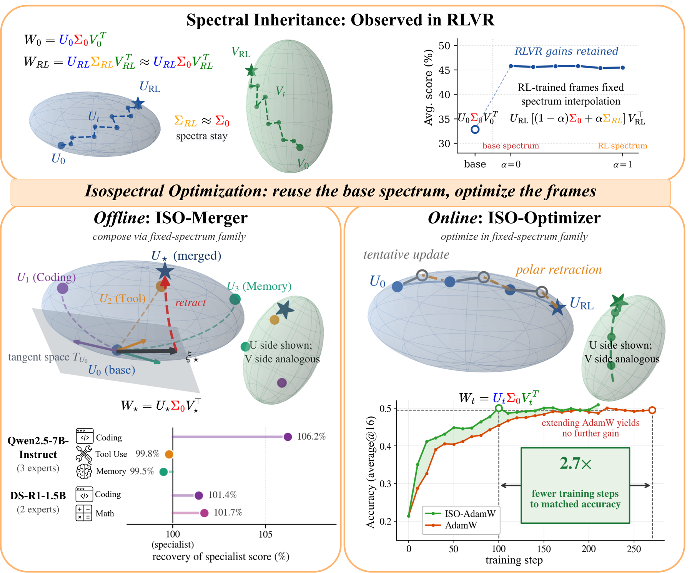
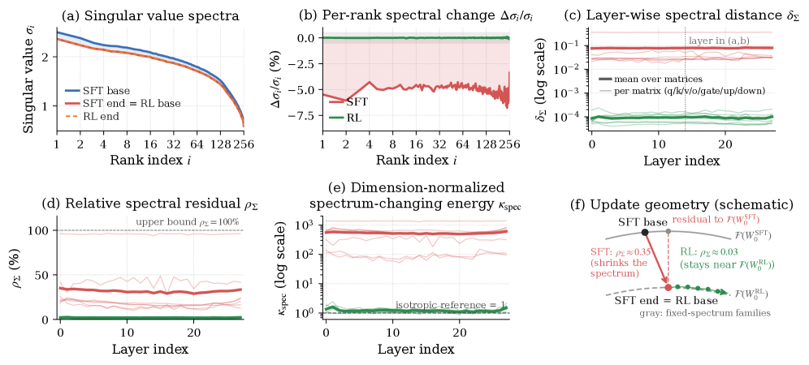

ISO: An RLVR-Native Optimization Stack
Paper: "ISO: An RLVR-Native Optimization Stack" (arXiv 2607.19331, located via search; the tracker entry has no arXiv id). Authors: Hanqing Zhu, Wenyan Cong, Zhizhou Sha, Sagnik Mukherjee, Xinyuan Song, David González-Martínez, Xiaoxia Wu, Yuandong Tian, Shiwei Liu, David Z. Pan, Zhangyang "Atlas" Wang. Project page: iso-rlvr.github.io.
TL;DR
- RLVR barely changes the singular values (the spectrum) of weight matrices; essentially all behavioral change lives in rotations of the left/right singular frames U and V. The paper names this spectral inheritance and argues it is a genuine optimization preference of RLVR, not a high-dimensional geometry artifact.
- ISO (Isospectral Optimization) turns the observation into a constraint: freeze each matrix's spectrum at the base model's Σ₀ and run a standard optimizer (AdamW or Muon) on the orthonormal frames, with a polar retraction keeping them on the Stiefel manifold.
- Two instantiations: ISO-Merger composes shared-base RL specialists with no data, rollouts, gradients, or distillation, and gets the best aggregate among data-free merging baselines; ISO-AdamW matches AdamW's 270-step Qwen3-8B RLVR accuracy in roughly 100 steps (up to 2.7x fewer steps), at ~7% per-step overhead.
Why this matters
RLVR (RL with verifiable rewards) is now the default post-training recipe for reasoning and, increasingly, agentic models. But the RLVR stack below the loss function — optimizer, update geometry, merging tooling — is inherited unchanged from pretraining. AdamW treats every weight coordinate as an unstructured scalar; nothing in the update rule knows the run started from a strong base model and receives sparse verifiable reward rather than dense next-token supervision.
For anyone doing agentic RL this matters in two concrete ways. First, sample efficiency: long-horizon rollouts dominate the cost of agentic RLVR, so an optimizer-layer change that reaches the same accuracy in 2-3x fewer steps multiplies everything else — orthogonal to credit-assignment work (TRACE, in this list) and infrastructure work (Molt, OSGym). Second, composition: labs increasingly train separate RL specialists (code, tool use, search, memory) from one base, and merging them normally requires more data, rollouts, or on-policy distillation. A structural characterization of what RLVR actually does to weights enables merging in the right coordinate system, for free.
The gap: prior work had noticed RLVR updates are small, KL-close to base, and sparse, but not which degrees of freedom RLVR uses. ISO gives that account (spectrum vs. frames), stress-tests it against an isotropic-motion null hypothesis, and builds an optimizer and a merger that exploit it.
The core idea

Figure from the paper: "From spectral inheritance to Isospectral Optimization. Unconstrained RLVR changes both singular frames while its spectra remain close to their base values... ISO turns this regularity into an inductive bias: reuse Σ₀ and optimize (U,V)."
Decompose each weight matrix as W = U Σ Vᵀ. The empirical claim, measured across RLVR checkpoints:
- Σ is essentially frozen. On DeepSeek-R1-Distill-Qwen-1.5B, RLVR moves singular values by ~10⁻²% (relative drift δΣ), and the relative spectral residual ρΣ — spectral distance as a fraction of total checkpoint displacement — averages ~3% across layers. During Qwen3-8B RLVR training, spectral distance stays below 10⁻⁵ over the entire trajectory. SFT, by contrast, shows spectral drift 2-3 orders of magnitude larger.
- This is not just "small updates in high dimensions." A calibration metric κ_spec asks whether the observed spectral quiet is what random isotropic motion of the same magnitude would produce. RLVR gives order-one values (1.02-1.35), i.e., consistent with the update simply having very little to say to the few spectrum-changing directions; SFT gives 89-1364, a genuine spectral push. So RLVR distributes its update in a way that leaves the spectrum alone by construction of the learning signal, not by accident of scale.
- Both frames must stay free. Reconstructing RLVR checkpoints under different constraint classes: restricting updates to remixing within incoming subspaces leaves 87% of the update unexplained; freezing either one frame leaves 42-45% unexplained; freezing only the spectrum (both frames free) leaves just 1.8% unexplained. The pattern repeats across sequential RL stages with different objectives.

Figure from the paper: "Spectral dynamics under SFT and RLVR post-training. (a) Representative singular-value profiles (v_proj, layer 14). (b) Rank-wise relative change: SFT reshapes the spectrum, whereas RLVR stays within a fraction of a percent."
The single key insight: RLVR is, to first order, motion on the fixed-spectrum family F(W₀) = {U Σ₀ Vᵀ} — a rotation of the base model's singular frames around an inherited spectrum. If that is where the optimizer trajectory lives anyway, make it the feasible set.
How it works
ISO-Optimizer (online). Parameterize each matrix as W(U,V) = U Σ₀ Vᵀ with U, V orthonormal (Stiefel manifold) and Σ₀ fixed at the base values. Per step:
- From the weight-space gradient G_W, get frame gradients by chain rule: G_U = G_W · V · Σ₀ and G_V = G_Wᵀ · U · Σ₀. The Σ₀ factors mean frame motion along large singular directions counts for more, which is the correct sensitivity.
- Apply the base optimizer (AdamW or Muon) independently to each frame, with optimizer state living in frame coordinates, producing tentative Ū, V̄ that generally violate orthonormality.
- Restore feasibility by polar retraction: U⁺ = polar(Ū), V⁺ = polar(V̄), where polar(X) = P Qᵀ from X's SVD, computed in FP64 for stability.
- Reconstruct W⁺ = U⁺ Σ₀ (V⁺)ᵀ. The spectrum is preserved exactly in exact arithmetic (their Proposition 4.1 shows feasible frame motion preserves the spectrum to first order).
The load-bearing equations (paper Eqs. 15, 34, 30-31):
Here \(\mathrm{St}(\cdot,q)\) is the Stiefel manifold of matrices with \(q\) orthonormal columns and \(\Sigma_0\) is frozen at the base model's singular values — the feasible set is exactly the fixed-spectrum family.
where \(G_W = \nabla_W \mathcal{L}(U\Sigma_0 V^\top)\) is the ordinary weight-space gradient; the \(\Sigma_0\) factors weight frame motion by singular-direction importance.
where \(\mathrm{polar}(X) = P_X Q_X^\top\) from the SVD \(X = P_X S_X Q_X^\top\) — the nearest orthonormal frame to the tentative optimizer output, computed in FP64.
Measured overhead: ~7% of step time on Qwen3-4B.
ISO-Merger (offline, data-free). Given K RL specialists sharing base W₀: sign-canonicalize each specialist's singular vectors against the base (resolving (u,v) → (−u,−v) ambiguity); compute frame displacements ΔU_i = U_i − U₀, ΔV_i = V_i − V₀; project them onto the Stiefel tangent space at the base frames; mask the trailing (low-singular-value) modes with keep ratio ρ_keep = 0.9, which empirically stabilizes merging; build a Gram matrix of the experts' first-order effect proxies and solve a ridge-stabilized system (Γ + λI)c = diag(Γ) with clipping to get composition coefficients targeting unit self-retention; aggregate the weighted tangent directions, re-project, and polar-retract to get U, V; output W = U Σ₀ V*ᵀ. No post-merge data, rollouts, gradient steps, or on-policy distillation anywhere in the pipeline.
The merger's coefficient rule (paper Eqs. 24-28): with expert effect proxies \(g_i = \tilde\xi_{U,i}\Sigma_0 V_0^\top + U_0 \Sigma_0 \tilde\xi_{V,i}^\top\) and Gram matrix \(\Gamma_{ij} = \langle g_i, g_j\rangle_F\),
where \(b = \operatorname{diag}(\Gamma)\), so the solve targets unit self-retention \(\mathrm{ret}_i(c) = (\Gamma c)_i / \Gamma_{ii} \approx 1\) for every specialist simultaneously.
Both procedures in one glance:
# ISO-Optimizer: one training step (per weight matrix)
given U, V (orthonormal frames), Σ0 (frozen base spectrum), states s_U, s_V
1. G_W ← ∇_W L(U Σ0 Vᵀ) # standard backprop gradient
2. G_U ← G_W · V · Σ0 ; G_V ← G_Wᵀ · U · Σ0
3. (Ū, s_U) ← Opt(U, G_U, s_U) # AdamW or Muon, in frame coords
(V̄, s_V) ← Opt(V, G_V, s_V)
4. U ← polar(Ū) ; V ← polar(V̄) # FP64 SVD retraction to Stiefel
5. W ← U Σ0 Vᵀ # spectrum preserved exactly
# ISO-Merger: data-free composition of K shared-base specialists
1. SVD base + specialists; sign-canonicalize frames against base
2. ΔU_i ← U_i − U0 ; ΔV_i ← V_i − V0
3. project ΔU_i, ΔV_i onto Stiefel tangent space at (U0, V0)
4. mask trailing (low-σ) modes with keep ratio ρ_keep = 0.9
5. solve (Γ + λI) c = diag(Γ); clip → coefficients c*
6. ξ* ← Σ_i c*_i ξ̃_i ; re-project; polar-retract → U*, V*
7. output W* ← U* Σ0 V*ᵀ # no data, rollouts, or gradients
Results
All numbers below are from the paper (v1).
Merging. Qwen2.5-7B-Instruct base with three RLVR specialists (coder, tool-use, memory), evaluated on LiveBench, LiveCodeBench v2, BFCL v4, RULER: ISO-Merger aggregate 63.80 vs. 62.88 for the best data-free baseline (RAM); e.g., BFCL Tool Use Live 79.46 vs. 76.17. DeepSeek-R1-Distill-Qwen-1.5B base with two specialists (Archer2.0 coding, JustRL math): aggregate 44.38 vs. 43.51, with AIME 2025 37.81 vs. 35.80 and OlympiadBench 56.64 vs. 55.54.
Online RLVR (DeepMath-103K math training). Qwen3-1.7B-Base, 400 steps: ISO-AdamW aggregate 28.74 vs. AdamW 28.35 and Muon 27.70. Qwen3-4B-Base, 400 steps: 43.46 vs. 41.69 (AdamW) and 42.23 (Muon); ISO-AdamW reaches AdamW's final 41.69 in ~180-200 steps (~2.2x). Qwen3-8B-Base: ISO-AdamW hits 0.509 aggregate at step 210 while AdamW reaches 0.495 at step 270 — the headline "matches AdamW's 270-step accuracy in ~100 steps" corresponds to the paper's up-to-2.7x step-reduction claim. Coding (ArcherCodeR data, DS-R1-Distill-1.5B, 220 steps): LiveCodeBench v5/v6 average 26.20 vs. 25.13 for AdamW. ISO-Muon on Qwen3-4B reaches Muon's best (0.422) by step 220 vs. 300, ending at 0.428.
How it connects
Within this reading list, ISO sits at a different layer of the same agentic-RL stack as several other entries. TRACE attacks the reward/credit layer (turn-level credit for long-horizon agents); ISO attacks the update-geometry layer; the two are composable in principle — nothing in ISO assumes anything about how advantages were computed. Molt and OSGym are the infrastructure layer; Molt's explicit design goal of a codebase small enough to modify per-experiment is exactly the environment where you'd try swapping AdamW for ISO-AdamW. The "Scaling Law for Pretrain vs RL Compute Allocation" entry is directly relevant: a 2-2.7x step-efficiency gain changes the pretrain/RL compute exchange rate. The dongxi weekly roundup in this list also covers ISO.
Against well-known prior work: ISO inverts the LoRA philosophy — LoRA constrains updates to low rank while leaving singular values free to change within that subspace; ISO allows full-rank frame rotation but pins the spectrum. It is kin to Muon in spirit (both say the geometry of the update matters, and both use orthogonalization machinery), and it extends the data-free merging line (task arithmetic, TIES-style merging) by doing the composition in the tangent space of the correct manifold rather than raw weight space. It also dovetails with the broader empirical literature showing RLVR stays KL-close to the base and updates a sparse fraction of parameters — co-author Mukherjee has prior work in that vein — by identifying which structured degrees of freedom the small update actually uses. The abstract explicitly builds on the authors' own prior spectral analysis (Zhu et al., 2025).
Critical take
- The accuracy deltas are small. Aggregate gains over AdamW are roughly +0.4 to +1.8 points; merging gains are under a point of aggregate. The real claim is step efficiency, and even that must be netted against ~7% step-time overhead plus the memory cost of storing U, V and duplicated optimizer states (the paper concedes this requires full sharding and possibly state offloading).
- Correlation vs. causation. Spectral inheritance is an observation about unconstrained RLVR runs. Enforcing it as a hard constraint may act mainly as a regularizer that helps in short, low-data runs — the coding experiments use small datasets, and the paper admits longer training risks overfitting. Whether the fixed-spectrum family caps the ceiling of long RLVR runs (where the policy must drift further from base) is untested.
- Narrow evidence base. Everything is Qwen-family, 1.5B-8B, single-turn math/coding RLVR. No multi-turn agentic tasks, no MoE, no non-Qwen bases, and a single learning rate (7.5e-7) reused across scales without tuning at 8B. For the agentic-RL setting this list cares about, the transfer is plausible but unshown.
- Empirical knobs without theory. Trailing-mode masking (ρ_keep = 0.9), ridge stabilization, coefficient clipping, and sign canonicalization are all acknowledged as empirically motivated. ISO-Merger "targets rather than guarantees" unit self-retention, and only covers specialists fine-tuned from a shared base — not merging of divergent generalists.
- Engineering at scale. A per-matrix FP64 SVD (polar retraction) every step is fine at 8B; at frontier scale it is a real systems question the paper does not address.
Open questions worth tracking: does spectral inheritance survive very long RLVR runs, higher-KL regimes, or agentic multi-turn training with tool feedback? Does it hold for MoE expert matrices, where routing interacts with the spectrum? And does ISO-Muon's thinner margin suggest the benefit partially overlaps with what Muon's orthogonalization already provides?
If you remember three things
- RLVR is, to first order, rotation of singular frames around a frozen base spectrum: freezing Σ while freeing U and V leaves only 1.8% of the observed RLVR update unexplained, and this survives an isotropy null-hypothesis test that SFT fails.
- Making the constraint explicit yields ISO-AdamW/ISO-Muon: same optimizer, frame coordinates, polar retraction — matched RLVR accuracy in up to 2.7x fewer steps on Qwen3-8B at ~7% step overhead.
- The same geometry gives data-free merging of shared-base RL specialists (tangent-space composition plus retraction, no rollouts or distillation) — but all evidence so far is small-scale, Qwen-only, and single-turn; treat agentic transfer as an open question.